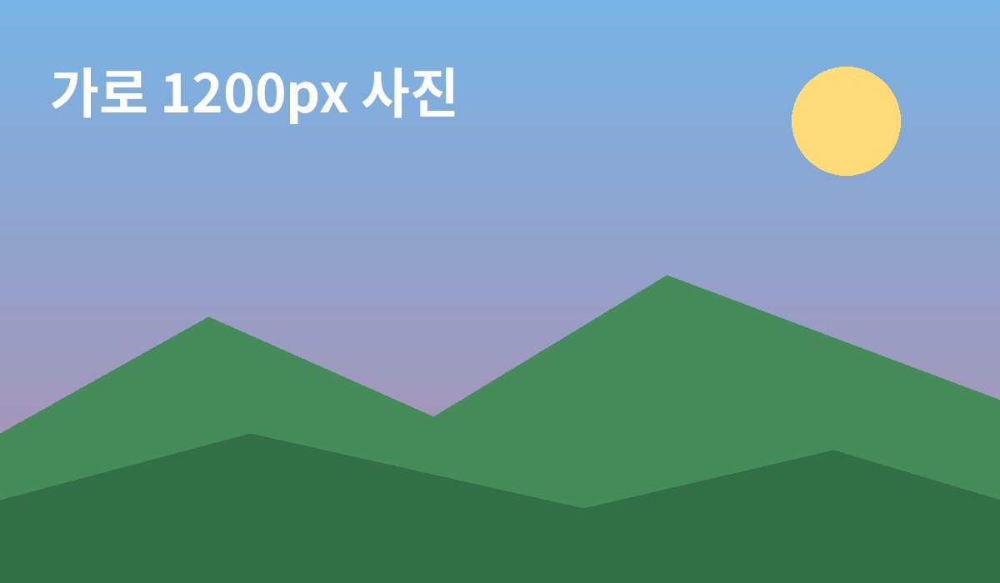

사진 한 장

가로 1200px 사진입니다. 기기 모드 375px에서 ① 주석을 풀기 전과 후를 비교합니다.
수강 과목
| 과목 코드 | 과목명 | 학점 | 요일 | 시간 | 강의실 | 정원 | 신청 |
|---|---|---|---|---|---|---|---|
| CS101 | 웹 프로그래밍 기초 | 3 | 월 · 수 | 09:00~12:00 | 702호 | 30 | 신청 |
| CS102 | 자바 입문 | 3 | 화 · 목 | 13:00~16:00 | 702호 | 30 | 신청 |
| DB201 | 데이터베이스 | 2 | 금 | 09:00~12:00 | 703호 | 25 | 신청 |
② 주석을 풀기 전: 페이지 전체가 옆으로 밀린다. 푼 뒤: 표만 옆으로 밀린다.